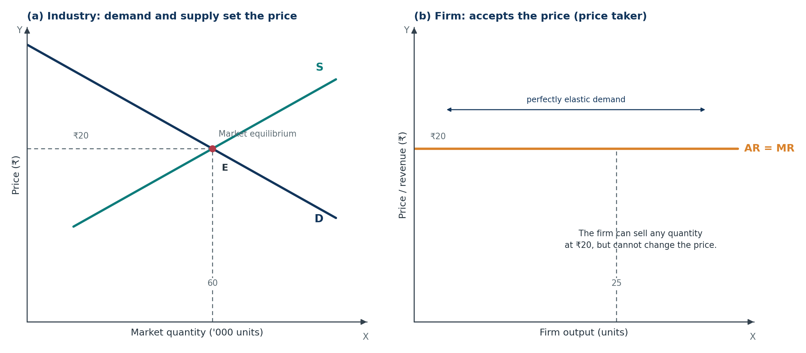
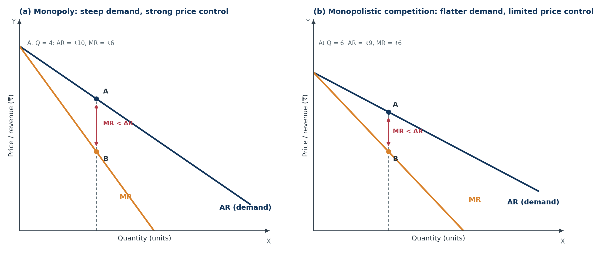
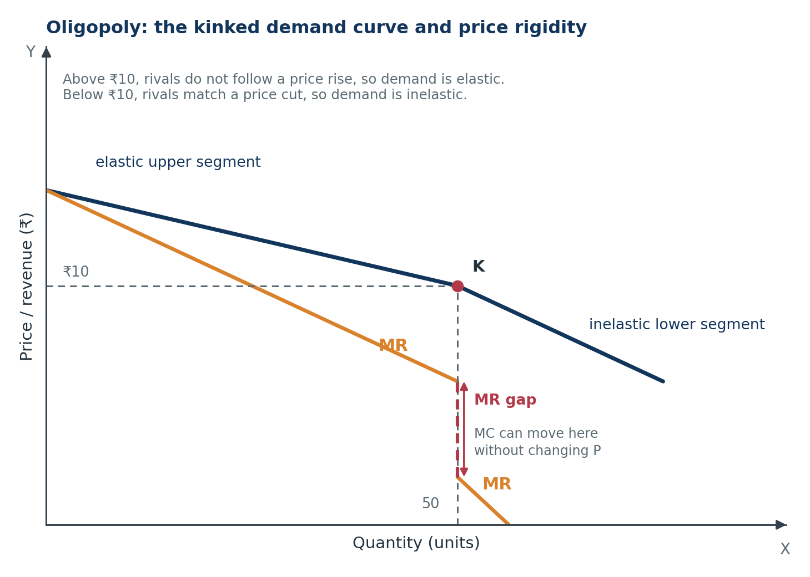

Microeconomics · Class 11Chapter 10Notes + quick revision
Main Market Forms
One chapter, four market forms. Learn why a mandi farmer is a price taker, why a patent holder is a price maker, and why a few telecom giants watch each other before changing a price.
Chapter at a glance
Six stops, one comparison table, and a short exam corner. Tap a card to jump straight in.
The one-line idea: a market form is decided by how many sellers there are, what they sell, and how freely new firms can enter — and that decides whether a firm is a price taker or a price maker.
The core question: why can a farmer in a mandi not change the price of wheat, while a toothpaste brand or a telecom company can influence its price?
Key Terms — Read These First
The words that carry marks. Read them once now, then test yourself after the chapter.
- Market
- An arrangement through which buyers and sellers of a commodity come into contact to buy and sell at a price; it need not be a physical place.
- Market structure
- The features of a market — number of sellers, nature of product, entry conditions, knowledge — that decide how firms behave and how much price control they have.
- Perfect competition
- A market with very many buyers and sellers, a homogeneous product, free entry and exit, perfect knowledge, perfect factor mobility, and no transport or selling costs.
- Pure competition
- A narrower concept: only the three basic conditions — large numbers, homogeneous product, free entry and exit.
- Price taker
- A firm that has no option but to accept the price fixed by the market or industry.
- Price maker
- A firm that can influence the price of its product by choosing its output or price.
- Homogeneous product
- A product identical in all respects, so buyers treat all sellers’ products as perfect substitutes.
- Product differentiation
- Making a product appear different from rival brands through quality, design, packaging, brand image, location or service.
- Selling cost
- The cost of promoting sales — advertisement, free samples, discounts and sales promotion.
- Monopoly
- A market with a single seller, no close substitutes and strong barriers to the entry of new firms.
- Monopolistic competition
- A market with many sellers selling closely related but differentiated products, free entry and exit, and significant selling costs.
- Oligopoly
- A market with a few large firms selling homogeneous or differentiated products, with barriers to entry and interdependence among firms.
- Interdependence
- A situation in which each firm’s price and output decisions affect, and are affected by, the decisions of rival firms.
- Kinked demand curve
- A demand curve that is elastic above the current price and inelastic below it, explaining price rigidity in oligopoly.
- Cartel
- A formal agreement among firms to fix price, output or market share and act like a single monopoly.
- Normal profit
- The minimum profit needed to keep the entrepreneur in business; it is included in cost, so it means zero economic profit.
- Abnormal profit
- Profit above normal profit; total revenue exceeds total cost, including normal profit. Also called supernormal profit.
- Excess capacity
- Producing less than the output at which average cost is minimum; the firm could serve more demand but does not find it profitable at its chosen price.
Market and Market Structure
The idea of this section. In economics, a market is not a shop or a place. It is the contact between buyers and sellers. Once we know that, we can ask what makes one market different from another.
1.1 Market in economics
Definition. In economics, a market is an arrangement or mechanism through which buyers and sellers of a commodity come into contact — directly or through some means of communication — to buy and sell at a price.
In simple words. A market is not the building. It is the buying and selling relationship between buyers and sellers.
Example. You buy a phone from an online seller in another state. You never meet the seller, and there is no single shop. Yet a market exists because the buyer and seller are in contact through the internet and agree on a price.
Essential elements of a market:
- Buyers and sellers — both sides must exist.
- A commodity — a good or service must be bought and sold.
- Contact — buyers and sellers must be able to communicate. Phone, internet or an agent is enough; physical presence is not necessary.
- Competition — buyers compete with buyers, and sellers with sellers.
- An area — the market may be local, regional, national or global.
One important point. A market can exist without a fixed place, but it cannot exist without contact between buyers and sellers.
1.2 Market structure
Definition. Market structure refers to the organisational features of a market that determine the behaviour of firms and the nature of competition among them.
| Factor | What it decides | Simple example |
|---|---|---|
| Number of buyers and sellers | How much any one buyer or seller can influence price | One railway operator vs thousands of vegetable sellers |
| Nature of the commodity | Whether products are identical or differentiated; whether close substitutes exist | Wheat is identical; toothpaste brands are different |
| Knowledge of market conditions | Whether buyers and sellers know the prices and quality available | A buyer who does not know other prices may pay more |
| Mobility of goods and factors | Whether goods and inputs can move freely to the best market | A perishable vegetable cannot be sent far |
| Freedom of entry and exit | Whether new firms can enter and old firms can leave | A patent blocks entry; a tea stall faces no such block |
Why market structure matters. The same profit motive produces different behaviour in different markets. A wheat farmer cannot set price; a patent-holding drug company can. Market structure explains that difference.
1.3 The four market forms
| Market form | One-line meaning | Standard example |
|---|---|---|
| Perfect competition | Very many sellers, identical product, free entry and exit; the firm is a price taker | Wheat or paddy in a mandi (closest example) |
| Monopoly | One seller, no close substitute, strong barriers to entry; the firm is a price maker | Indian Railways in rail transport (textbook example) |
| Monopolistic competition | Many sellers, differentiated products, free entry and exit, heavy advertising | Toothpaste, soap, shampoo, restaurants |
| Oligopoly | A few large sellers, homogeneous or differentiated products, barriers to entry, interdependence | Telecom, automobiles, cement, airlines |
The competition spectrum. From most competitive to least competitive:
Do not treat this as a strict ranking. Real markets can overlap. The spectrum is a useful map, not a law.
Exam tip. If a question asks “Which market form is this?”, count the sellers first, then check whether the product is identical or differentiated, then check entry barriers.
- Q1. Define a market in economics. Why is a physical place not necessary for a market to exist?
- Q2. A market has many sellers, each selling a slightly different brand of soap. Which market form is it? Give one reason.
- Q3. Why does the number of sellers affect how much price control a firm has?
Show answers
- A market is an arrangement through which buyers and sellers of a commodity come into contact to buy and sell at a price. Physical presence is not necessary because contact can be through the internet, telephone, agents or other means of communication.
- Monopolistic competition. There are many sellers, but the product is differentiated by brand, quality or packaging, so each seller has some price power.
- The larger the number of sellers, the smaller each seller’s share of total supply. A small share means an individual seller cannot change market supply enough to change the price. With one seller, the whole supply is controlled by that seller, so price control is much greater.
Perfect Competition
The idea of this section. Perfect competition is the benchmark of maximum competition. Many small sellers, an identical product, and no barriers. The firm is so small that it cannot move the price — it simply accepts what the market decides.
2.1 Meaning
Definition. Perfect competition is a market situation in which there are a very large number of buyers and sellers dealing in a homogeneous product at a price fixed by the industry, with free entry and exit, perfect knowledge, perfect mobility of factors of production, and no transport or selling costs.
In simple words. Many small sellers, the same product, one market price. No single seller can raise or lower that price.
Example. A wheat mandi. One farmer’s wheat is identical to another farmer’s wheat. If a farmer asks ₹2 more per kg, buyers simply walk to the next farmer. If he asks less, he only loses money — he can already sell all his wheat at the market price.
Perfect competition is a theoretical benchmark. No real market satisfies all seven conditions perfectly. Mandis, vegetable markets and commodity exchanges come close, but they still have imperfections. We study perfect competition because it gives us a clear starting point for understanding price and output.
2.2 The seven features and their implications
| # | Feature | What it means | Implication |
|---|---|---|---|
| 1 | Very large number of buyers and sellers | Each buyer and seller is tiny compared with the whole market | No single buyer or seller can influence price; both are price takers; a uniform price prevails |
| 2 | Homogeneous product | Every seller’s product is identical in size, quality, colour and packaging | Buyers treat all products as perfect substitutes; no seller can charge more; no brand competition |
| 3 | Free entry and exit | No legal, technical or natural barrier stops a firm from entering or leaving | Abnormal profits attract new firms; losses drive firms out; in the long run, firms earn only normal profit |
| 4 | Perfect knowledge | Buyers know prices and quality; sellers know technology and input prices | No seller can charge a higher price; no buyer will pay more; all firms face similar costs |
| 5 | Perfect mobility of factors | Land, labour, capital and entrepreneurship can move freely to the best-paying use | Factors move to the best-paying industry; costs tend to equalise; a uniform price is supported |
| 6 | Absence of transport costs | Goods can be sold anywhere without extra transport cost | The same price tends to prevail in different locations |
| 7 | Absence of selling costs | No advertisement or sales promotion is needed | Costs are lower; firms do not compete through branding or advertising |
2.3 Normal profit, abnormal profit and abnormal loss
- Normal profit: the minimum profit needed to keep the entrepreneur in business. It is included in cost, so normal profit means zero economic profit.
- Abnormal profit (supernormal profit): total revenue is greater than total cost, where total cost includes normal profit.
- Abnormal loss: total revenue is less than total cost, including normal profit.
The long-run adjustment:
Important. In the short run, a perfectly competitive firm can earn abnormal profit or suffer a loss. The “normal profit only” result is a long-run result.
2.4 Price taker, firm and industry
Firm. A single production unit that produces or sells a good or service.
Industry. All the firms producing the same commodity. For example, all toothpaste makers together form the toothpaste industry.
Under perfect competition:
- The industry is the price maker. Its demand and supply curves decide the market price.
- The firm is the price taker. It must accept the price decided by the industry.
- The firm can sell any quantity at the market price, but it cannot change the price.
- If the firm charges more, its demand falls to zero because buyers can buy the identical product elsewhere.
- If the firm charges less, it sells its output at a lower price and loses revenue unnecessarily.
The firm’s demand curve is horizontal. It is a straight line parallel to the quantity axis at the market price. Demand is perfectly elastic (price elasticity of demand = infinity).
AR, MR and TR under perfect competition:
- AR = Price, because every unit is sold at the same price.
- MR = Price, because selling one more unit adds exactly the price to total revenue.
- Therefore, AR = MR = Price.
- TR = P × Q, so the TR curve is a straight line starting from the origin.

What to notice. The downward-sloping demand curve in panel (a) belongs to the industry, not to the firm. The firm is too small to affect the market price, so its own demand curve is horizontal.
Common confusion. “Under perfect competition, the demand curve is downward sloping.” This is true for the industry, but false for the firm. The firm’s demand curve is horizontal.
2.5 Pure competition versus perfect competition
Pure competition requires only three conditions:
- A very large number of buyers and sellers.
- A homogeneous product.
- Freedom of entry and exit.
Perfect competition requires pure competition plus four additional conditions:
- Perfect knowledge among buyers and sellers.
- Perfect mobility of factors of production.
- Absence of transport costs.
- Absence of selling costs.
The exam line: Perfect competition = Pure competition + Perfect market.
| Basis | Pure competition | Perfect competition |
|---|---|---|
| Number of conditions | Three | Seven |
| Scope | Narrower | Wider |
| Includes perfect knowledge? | No | Yes |
| Includes perfect factor mobility? | No | Yes |
| Includes zero transport and selling costs? | No | Yes |
| Relationship | A part of perfect competition | Pure competition plus four more conditions |
- Q1. Why is a perfectly competitive firm’s demand curve horizontal?
- Q2. The market price is ₹20 and a firm sells 50 units. Find TR, AR and MR.
- Q3. A farmer in a mandi cannot charge more than the market price. Which features of perfect competition explain this?
Show answers
- Because the firm is too small to affect the market price. At the market price it can sell any quantity, but if it raises its price even slightly, buyers will buy the identical product from other sellers, so its demand falls to zero. Hence its demand curve is a horizontal line at the market price.
- TR = P × Q = ₹20 × 50 = ₹1,000. AR = TR / Q = ₹1,000 / 50 = ₹20. MR = ₹20, because every extra unit sells at the same price.
- The very large number of sellers, the homogeneous product and perfect knowledge. Buyers know that every farmer’s wheat is identical and they have many sellers to choose from, so they will not pay more to one farmer.
Monopoly
The idea of this section. Monopoly is the opposite extreme. One seller, no close substitute, and barriers that keep rivals out. The firm can choose its price — but it still cannot force buyers to buy at any price it likes.
3.1 Meaning
Definition. Monopoly is a market situation in which there is a single seller selling a product that has no close substitutes, and there are strong barriers to the entry of new firms.
In simple words. One seller, no close alternative. The seller is the market.
Example. A patented medicine for a rare disease. During the patent period, no other firm can legally make the same molecule. The patent holder is the only seller.
Standard textbook example. Indian Railways is the usual textbook example of monopoly in rail transport. In reality, it faces competition from buses, airlines and private vehicles, so it is not a pure monopoly. Use it as an example, but mention the caveat if the question asks you to evaluate.
Real monopolies are rare. A monopoly needs both a single seller and no close substitute. If a close substitute exists, the seller’s power is limited.
3.2 Features of monopoly
| # | Feature | What it means | Implication |
|---|---|---|---|
| 1 | Single seller | One firm supplies the entire market | The firm and the industry are the same; there is no separate industry supply curve |
| 2 | No close substitutes | Buyers cannot easily switch to another product | Demand is less elastic; the seller has more price power |
| 3 | Strong barriers to entry | New firms cannot enter easily | Abnormal profit can persist even in the long run |
| 4 | Price maker | The firm can choose its price or output | It faces a downward-sloping demand curve; it cannot choose both price and quantity independently |
| 5 | Downward-sloping AR | To sell more, the firm must lower the price | MR lies below AR; MR can become zero or negative |
| 6 | Price discrimination possible | The firm may charge different prices to different buyers | It can capture more consumer surplus, but only if resale is prevented |
| 7 | Selling costs may be low | The firm does not need to beat a rival brand | Advertising may still be used to expand total demand, but it is not forced by competition |
Barriers to entry — the three main types:
- Legal barriers: patents, copyrights, government licences, exclusive franchise. Example: a patented medicine; a licence to operate a lottery.
- Natural barriers: economies of scale, control of a key raw material, network effects. Example: one city water pipeline is cheaper than duplicate pipelines.
- Strategic barriers: high capital requirements, long-term contracts with suppliers, strong brand loyalty. Example: a new airline needs a huge fleet and airport slots.
Why barriers matter. Without barriers, abnormal profit would attract new firms, exactly as in perfect competition. Barriers are what allow a monopolist to keep abnormal profit in the long run.
3.3 Why MR is less than AR under monopoly
A monopolist faces the market demand curve, which slopes downward. To sell one more unit, it must lower the price — and the lower price applies to all units sold, not just the extra unit.
| Price (₹) | Quantity | TR (₹) | AR (₹) | MR (₹) |
|---|---|---|---|---|
| 10 | 1 | 10 | 10 | 10 |
| 9 | 2 | 18 | 9 | 8 |
| 8 | 3 | 24 | 8 | 6 |
| 7 | 4 | 28 | 7 | 4 |
Reading the table:
- At Q = 1, AR = ₹10 and MR = ₹10. For the first unit, MR = AR.
- To sell the second unit, the price falls to ₹9. TR rises from ₹10 to ₹18, so MR = ₹8.
- But AR at Q = 2 is ₹9. Therefore, MR (₹8) < AR (₹9).
- The reason: the firm loses ₹1 on the first unit and gains ₹9 on the second unit. Net addition = ₹9 − ₹1 = ₹8.
The general rule. Under monopoly (and under any downward-sloping demand curve), MR < AR for every additional unit after the first. The MR curve lies below the AR curve. MR can become zero and then negative.

What to notice. The steeper the demand curve, the stronger the price control. The monopolist’s demand curve is steeper than the monopolistically competitive firm’s demand curve because the monopolist has no close rivals.
Link to Chapter 8. A profit-maximising monopolist chooses the output where MR = MC. This chapter only asks you to understand the AR–MR relationship; the equilibrium condition is studied in Producer Equilibrium.
3.4 Long-run profit and price discrimination
Can a monopolist earn abnormal profit in the long run? Yes, it can — because barriers block new firms. But abnormal profit is not guaranteed. If demand is weak or costs are high, even a monopolist can suffer a loss. Barriers make abnormal profit possible, not certain.
Price discrimination. Selling the same good to different buyers at different prices, where the price difference is not explained by a difference in cost.
Conditions needed:
- The market can be separated into groups of buyers.
- Resale between groups is difficult or impossible.
- The groups have different price elasticities of demand.
Examples: electricity slab rates, railway fares (different classes and booking windows), doctor’s fees, movie tickets (weekend vs weekday).
Caution. Not every price difference is discrimination. If the cost of serving two buyers is different — for example, delivery to a distant location — a price difference may be justified by cost.
- Q1. Why is a monopolist called a price maker but still not free to charge any price it likes?
- Q2. At Q = 1, price is ₹10. To sell Q = 2, price must fall to ₹9. Find TR at both quantities and the MR of the second unit. Why is MR less than AR?
- Q3. “Indian Railways is a monopoly.” Is this fully true? Explain with real-world substitutes.
Show answers
- A monopolist is a price maker because it can choose a point on the market demand curve; no rival forces it to accept a price. But it is constrained by demand: if it sets a very high price, buyers will buy much less or switch to substitutes. It cannot force buyers to purchase a large quantity at a high price.
- TR at Q = 1 is ₹10; TR at Q = 2 is ₹18. MR of the second unit = ₹18 − ₹10 = ₹8. AR at Q = 2 is ₹9. MR is less than AR because the firm had to reduce the price on the first unit from ₹10 to ₹9 to sell the second unit, so the net addition to revenue is ₹9 − ₹1 = ₹8.
- It is the standard textbook example, but not a pure monopoly in reality. Indian Railways is the dominant rail operator, but for many journeys it faces competition from buses, airlines and private vehicles. A pure monopoly requires no close substitutes, which is not fully true here.
Monopolistic Competition
The idea of this section. Most consumer markets sit between the two extremes. Many sellers, but each brand is a little different. That difference gives the seller some price power — but free entry keeps long-run profit normal.
4.1 Meaning
Definition. Monopolistic competition is a market situation in which there are a large number of sellers selling closely related but differentiated products, with freedom of entry and exit, and where selling costs are important.
In simple words. Many brands, each a little different. Each brand has some loyal customers, so it can charge a slightly different price.
Example. Toothpaste. Colgate, Pepsodent, Close-Up and Sensodyne all clean teeth, but buyers perceive differences in taste, brand image, packaging and claims. Each brand has some customers who prefer it.
Other examples. Soap, shampoo, air conditioners, restaurants, salons, clothing brands, coaching centres, mobile phone brands.
Why “monopolistic” and “competition” together? Each firm has a small monopoly over its own differentiated product, but it still competes with many close substitutes. Hence the name.
4.2 Features of monopolistic competition
| # | Feature | What it means | Implication |
|---|---|---|---|
| 1 | Large number of sellers | Many firms, each with a small share of the market | No single firm controls the whole market; but the number is not as large as in perfect competition |
| 2 | Product differentiation | Products are close but not identical — brand, quality, design, packaging, location, service | Each firm has some loyal customers and some price power; demand slopes downward |
| 3 | Selling costs | Firms spend on advertisement, discounts, free samples and sales promotion | Firms compete for customers through branding, not only price |
| 4 | Freedom of entry and exit | New brands can enter; weak brands can leave | Abnormal profit attracts entry; long-run profit is normal |
| 5 | Lack of perfect knowledge | Buyers do not know every price and quality in the market | Firms can charge slightly different prices |
| 6 | Downward-sloping AR; MR < AR | To sell more, a firm must lower its price | MR lies below AR; demand is more elastic than under monopoly because close substitutes exist |
| 7 | Limited price control | The firm can influence price, but not control the whole market | A large price rise drives customers to rival brands |
Product differentiation — real versus imagined:
- Real differences: ingredients, quality, size, design, location, after-sales service, delivery speed.
- Imagined differences: brand image, packaging, celebrity endorsement, “premium” feel.
Example. Two restaurants may serve similar food, but one has a better location, faster service or a nicer ambience. Customers perceive a difference and are willing to pay more. That is product differentiation.
4.3 AR, MR and the long-run outcome
The demand curve. A monopolistically competitive firm faces a downward-sloping demand curve because its product is differentiated. But the curve is flatter than a monopolist’s demand curve because many close substitutes exist. A small price rise loses some customers, but not all of them.
MR below AR. As with monopoly, to sell more the firm must lower its price on all units, so MR < AR.
Long-run equilibrium:
- Free entry and exit drive abnormal profit to zero.
- The firm earns normal profit in the long run.
- The demand curve is tangent to the average cost curve.
- Price is greater than marginal cost (P > MC).
- The firm produces less than the output at minimum average cost — it has excess capacity.
Excess capacity in plain words. The firm could produce more at a lower average cost, but it does not because it would have to cut price and sell more units. It operates with spare capacity.
Example. A restaurant with empty tables at 3 pm, a salon with empty chairs on a weekday afternoon, or a garment factory running below full capacity. The firm has the ability to serve more customers, but the demand at its chosen price is not enough.
Why this happens. Product differentiation gives the firm some price power, so it does not have to produce at the lowest-cost point. Consumers gain variety; the economy may lose some cost efficiency. This is the trade-off of monopolistic competition.
Look again at Figure 10.2, panel (b). The monopolistically competitive firm’s AR curve is flatter than the monopolist’s because close substitutes exist, but MR still lies below AR. Jump back to the graph.
What to notice. Flatter demand means more elastic demand — buyers are more willing to switch when the price changes. That is exactly what many close substitutes do.
- Q1. What is product differentiation? Give two examples.
- Q2. Why is a monopolistically competitive firm’s demand curve downward sloping but flatter than a monopolist’s?
- Q3. “In the long run, a monopolistically competitive firm earns only normal profit but still charges a price above marginal cost.” Explain.
Show answers
- Product differentiation is making a product appear different from rival brands through quality, design, packaging, brand image, location or service. Examples: Colgate versus Pepsodent toothpaste; a neighbourhood restaurant versus a fast-food chain.
- The demand curve slopes downward because the firm’s product is differentiated and some buyers are loyal to it. It is flatter than a monopolist’s because many close substitutes exist, so buyers are more responsive to a price change.
- Free entry and exit drive abnormal profit to zero, so the firm earns normal profit in the long run. But because its demand curve slopes downward, it produces where MR = MC, and at that output price is greater than marginal cost. It also produces below minimum average cost, so it has excess capacity.
Oligopoly
The idea of this section. Oligopoly is a market of a few big players. Each firm knows that its own price and output decisions will provoke a response from rivals. That mutual dependence is the defining feature of oligopoly.
5.1 Meaning
Definition. Oligopoly is a market situation in which there are a few large firms selling homogeneous or differentiated products, with barriers to entry, and where each firm’s decisions affect the others.
In simple words. A handful of big players. Each one watches the others before changing price or output.
Example. Telecom in India. Jio, Airtel and Vi are the main players. If Jio cuts its data price, Airtel and Vi are likely to respond. Jio cannot ignore that response when deciding its own price.
Other examples. Automobiles (Maruti Suzuki, Hyundai, Tata Motors, Mahindra), cement (UltraTech, Ambuja, ACC), airlines (IndiGo, Air India and other carriers), soft drinks (Coca-Cola, Pepsi), steel (Tata Steel, JSW, SAIL), smartphones.
Homogeneous or differentiated. An oligopoly can sell a homogeneous product (cement, steel) or a differentiated product (cars, phones). The key is not the product but the fewness of sellers and their interdependence.
5.2 Features of oligopoly
| # | Feature | What it means | Implication |
|---|---|---|---|
| 1 | Few firms | A small number of large firms supply most of the market | Each firm has a large share; its actions affect rivals |
| 2 | Interdependence | Each firm must consider how rivals will react before changing price or output | Strategic behaviour; firms may avoid price cuts that trigger retaliation |
| 3 | Barriers to entry | High capital, brand loyalty, patents, economies of scale, government regulation | New firms find it difficult to enter; existing firms can earn abnormal profit |
| 4 | Non-price competition | Firms compete through advertising, freebies, warranties, service, design and distribution | Price cuts are avoided because they can start a price war |
| 5 | Role of selling costs | Advertising and sales promotion are large | Brand wars; high marketing budgets |
| 6 | Price rigidity | Prices tend to remain stable even when costs or demand change slightly | The kinked demand curve explains this tendency |
| 7 | Indeterminate demand curve | A firm’s demand depends on how rivals react | There is no single unique demand curve for the firm |
| 8 | Homogeneous or differentiated product | Products may be identical or branded | Oligopoly can exist in both commodity and consumer markets |
Interdependence — the key idea. In perfect competition, a firm ignores other firms because it is too small. In oligopoly, a firm cannot ignore them because each rival is large. A price cut by one firm can be matched by others, leaving all firms with lower revenue. That is why oligopolists often prefer advertising, service and product design to price competition.
Example. If Jio cuts prices, Airtel and Vi may match the cut. Jio’s expected gain in customers may disappear, and all three firms may earn less. So Jio may instead offer more data, free OTT subscriptions or better service.
5.3 The kinked demand curve and price rigidity
The kinked demand curve is a model that explains why oligopoly prices tend to be rigid.
Set-up. Suppose the current price is ₹10 and the current quantity is 50 units.
- If the firm raises its price above ₹10: rivals do not follow. Customers switch to the cheaper rivals, so the firm loses many customers. Demand is elastic above the current price.
- If the firm cuts its price below ₹10: rivals match the cut. The firm gains only a few customers, because all firms are now cheaper. Demand is inelastic below the current price.
The result. The demand curve has a kink at the current price and quantity. Above the kink, it is flatter (more elastic); below the kink, it is steeper (less elastic).
The MR gap. Because the demand curve changes slope at the kink, the marginal revenue curve has a vertical gap at the kink output.
Why price is rigid. If the marginal cost curve shifts up or down within the gap, the profit-maximising output and price remain unchanged. The firm has no incentive to change price. This explains price rigidity.

What to notice. The kink is at the current price, not at a random point. The upper segment is flatter because rivals ignore a price rise; the lower segment is steeper because rivals match a price cut.
Caveat. The kinked demand curve is one explanation of price rigidity. It does not explain how the current price was set in the first place, and not every oligopoly behaves this way. Treat it as a useful model, not a universal law.
5.4 Cartels and collusion
Cartel. A formal agreement among firms to fix price, output or market share, and to act like a single monopoly.
Why firms form a cartel. If they compete, price cuts can reduce everyone’s profit. If they cooperate, they can restrict output, raise price and earn monopoly-like profit together.
Example. OPEC (Organisation of the Petroleum Exporting Countries) is the classic example of a cartel among oil-producing countries.
Why cartels are unstable. Each member has an incentive to cheat: if everyone else restricts output, one firm can sell more at the high price and gain. When cheating is detected, the cartel may break down.
In India. Cartels are illegal under the Competition Act, 2002. The Competition Commission of India (CCI) can investigate and penalise firms that collude to fix prices or restrict supply.
- Q1. Why is oligopoly called a market of “few but powerful” firms?
- Q2. Using the kinked demand curve, explain why a firm may not raise its price even if its costs rise slightly.
- Q3. Why do oligopoly firms often prefer advertising to price cuts?
Show answers
- Because a few large firms supply most of the market. Each firm has a large market share, so its price and output decisions affect rivals, and rivals’ reactions affect it. This interdependence gives the firms power, but also limits their freedom to act independently.
- Above the current price, the demand curve is elastic because rivals do not follow a price rise. A price increase would therefore drive away many customers. If the rise in cost is small, the marginal cost curve may still pass through the vertical gap in MR, so the profit-maximising price and quantity remain unchanged. The firm keeps the price stable.
- A price cut is likely to be matched by rivals, so all firms end up with lower prices and lower revenue. Advertising, freebies and service can attract customers without starting a price war, and they can build brand loyalty. Hence oligopolists prefer non-price competition.
The Four Market Forms Compared
The idea of this section. This is the revision heart of the chapter. Learn the comparison table, then practise identifying market forms from short descriptions.
6.1 The master comparison table
| Basis | Perfect competition | Monopoly | Monopolistic competition | Oligopoly |
|---|---|---|---|---|
| Number of sellers | Very large | One | Many | Few |
| Nature of product | Homogeneous | No close substitute | Differentiated | Homogeneous or differentiated |
| Entry and exit | Free | Blocked | Free | Barriers |
| Price control | None; price taker | Strong; price maker | Some; limited price maker | Some; interdependent |
| Firm’s demand curve | Horizontal; perfectly elastic | Downward sloping; steep | Downward sloping; flatter | Indeterminate; often kinked |
| AR–MR relationship | AR = MR = Price | MR < AR | MR < AR | MR < AR; vertical gap at the kink |
| Selling costs | None | Low; not needed to beat a rival | High | High |
| Long-run profit | Normal profit | Abnormal profit possible | Normal profit | Abnormal profit possible |
| Real-world example | Wheat or paddy mandi | Patented medicine; Indian Railways (textbook) | Toothpaste; soap; restaurants | Telecom; cement; automobiles |
6.2 How to identify a market form in three questions
Question 1 — How many sellers?
- One seller → monopoly.
- A few large sellers → oligopoly.
- Many sellers → go to Question 2.
Question 2 — Is the product identical or differentiated?
- Identical → perfect competition.
- Differentiated → monopolistic competition.
Question 3 — Are there barriers to entry?
- No barriers + many sellers + identical product → perfect competition.
- No barriers + many sellers + differentiated product → monopolistic competition.
- Barriers + one seller → monopoly.
- Barriers + few sellers → oligopoly.
6.3 Reading real markets
| Market | Closest form | Why |
|---|---|---|
| Wheat or paddy mandi | Perfect competition | Many farmers, identical grain, free entry, farmers accept the mandi price |
| Vegetable market | Perfect competition (closest) | Many sellers, similar produce, easy entry; but perishability and local differences create imperfections |
| Indian Railways | Monopoly (textbook) | Single dominant rail operator, no close substitute for long-distance rail; buses and airlines are partial substitutes |
| Patented medicine | Monopoly | Patent blocks rival firms from making the same molecule during the patent period |
| Toothpaste | Monopolistic competition | Many brands, differentiated by taste, packaging and claims; heavy advertising |
| Restaurants | Monopolistic competition | Many restaurants, differentiated by cuisine, location, ambience and service |
| Telecom | Oligopoly | A few large operators, interdependence, high spectrum and network costs |
| Cement | Oligopoly | A few large firms, homogeneous product, high capital requirements |
The caveat to write in exams. These are closest forms, not perfect examples. Real markets rarely satisfy every condition. A mandi may have local middlemen with power; Indian Railways faces substitutes; toothpaste brands have some price power but many rivals. The model helps us understand the main forces, not label every market perfectly.
- Q1. Compare perfect competition and monopolistic competition on product, price control and selling costs.
- Q2. A market has four large cement firms. Which market form is it? Give two features that support your answer.
- Q3. A firm faces a horizontal demand curve. Which market form is it, and what does that imply about its price?
Show answers
- Perfect competition has a homogeneous product, no price control (price taker) and no selling costs. Monopolistic competition has a differentiated product, some price control (limited price maker) and significant selling costs.
- Oligopoly. It has a few large firms, and the firms are interdependent: each firm’s price and output decisions affect the others. Cement is also a homogeneous product with high entry barriers.
- Perfect competition. The horizontal demand curve means the firm can sell any quantity at the market price but cannot change the price; it is a price taker. Price equals AR and MR.
Common Mistakes to Avoid
| Mistake | Correct idea |
|---|---|
| “Under perfect competition, the demand curve is downward sloping.” | The industry’s demand curve is downward sloping; the firm’s demand curve is horizontal. |
| “A perfectly competitive firm is a price maker.” | It is a price taker. The industry is the price maker. |
| “A monopolist can charge any price it likes.” | It can choose a price, but demand limits it. A very high price means very low sales. |
| “Monopolistic competition is the same as monopoly.” | Monopolistic competition has many sellers, free entry and differentiated products; monopoly has one seller and blocked entry. |
| “Oligopoly always means homogeneous products.” | Oligopoly can have homogeneous (cement, steel) or differentiated (cars, phones) products. |
| “Under perfect competition, firms always earn normal profit.” | Normal profit is a long-run result. In the short run, firms can earn abnormal profit or suffer a loss. |
| “Selling costs are the same as production costs.” | Selling costs are promotion costs — advertisement, free samples, discounts. Production costs are costs of making the good. |
| “A monopolist always earns abnormal profit.” | A monopolist can suffer a loss if demand is weak or costs are high. Barriers make abnormal profit possible, not certain. |
Recap, Formulas and Exam Practice
8.1 Chapter recap
- A market is an arrangement through which buyers and sellers come into contact to buy and sell; it need not be a physical place.
- Market structure is decided by the number of buyers and sellers, the nature of the product, knowledge, mobility and freedom of entry and exit.
- Perfect competition has many buyers and sellers, a homogeneous product, free entry and exit, perfect knowledge, perfect factor mobility, no transport costs and no selling costs.
- A perfectly competitive firm is a price taker; its demand curve is horizontal; P = AR = MR.
- Pure competition has only the first three conditions; perfect competition is pure competition plus the four “perfect market” conditions.
- In the long run, free entry and exit wipe out abnormal profit and loss; firms earn normal profit.
- Monopoly has one seller, no close substitute and barriers to entry; it is a price maker, its AR slopes downward, and MR < AR.
- Monopolistic competition has many sellers, differentiated products, free entry and exit, and selling costs; it earns normal profit in the long run but has excess capacity.
- Oligopoly has a few large, interdependent firms, barriers to entry, non-price competition and price rigidity; the kinked demand curve explains price rigidity.
- Real markets are closest to one of these forms; they rarely fit every condition perfectly.
8.2 Formula sheet
| Concept | Formula | Remember |
|---|---|---|
| Total Revenue | TR = P × Q | Total money received from sales |
| Average Revenue | AR = TR / Q = P | Revenue per unit; always equal to price |
| Marginal Revenue | MR = ΔTR / ΔQ | Addition to TR from one more unit |
| Profit | π = TR − TC | TC includes normal profit |
| Perfect competition | P = AR = MR | Horizontal demand curve; price taker |
| Imperfect competition | MR < AR | Downward-sloping demand; price maker |
| MR and elasticity | MR = AR (1 − 1/Ed) | Optional; Ed is the absolute value of price elasticity |
| Long-run perfect competition | P = minimum AC | Normal profit; no abnormal profit |
| Long-run monopolistic competition | P = AC > MC | Normal profit; excess capacity |
| Monopoly long run | P > MC | Abnormal profit possible because entry is blocked |
Symbols: TR = total revenue; P = price; Q = quantity; AR = average revenue; MR = marginal revenue; Δ = change; TC = total cost; π = profit; AC = average cost; MC = marginal cost; Ed = price elasticity of demand.
8.3 Exam-style questions
Very short answer (1 mark)
- Define a market in economics.
- What is a price taker?
- Under which market form is AR = MR?
- Name the market form in which a single seller sells a product with no close substitutes.
- What is product differentiation?
Short answer (3 marks)
- Explain any three features of perfect competition.
- Distinguish between pure competition and perfect competition.
- Explain the implication of freedom of entry and exit under perfect competition.
- Why is MR less than AR under monopoly?
Long answer (4–6 marks)
- Explain the features of monopoly.
- Explain the features of monopolistic competition.
- Compare perfect competition, monopoly, monopolistic competition and oligopoly on the basis of number of sellers, nature of product, entry conditions and price control.
- “A firm can sell any quantity at the prevailing price but cannot change the price.” Identify the market form and explain its features.
- Explain the kinked demand curve and why it leads to price rigidity under oligopoly.
Show answer pointers
Very short answer
- A market is an arrangement through which buyers and sellers of a commodity come into contact to buy and sell at a price; it need not be a physical place.
- A price taker is a firm that has no option but to accept the price fixed by the market or industry.
- Perfect competition.
- Monopoly.
- Product differentiation is making a product appear different from rival brands through quality, design, packaging, brand image, location or service.
Short answer
- Any three of — very large number of buyers and sellers (no individual can influence price); homogeneous product (uniform price, no brand preference); free entry and exit (abnormal profit wiped out in the long run); perfect knowledge (no one can charge more); perfect factor mobility; no transport costs; no selling costs.
- Pure competition has three conditions: large numbers, homogeneous product, free entry and exit. Perfect competition has these three plus perfect knowledge, perfect factor mobility, no transport costs and no selling costs. Perfect competition is wider; pure competition is narrower.
- Freedom of entry means abnormal profit attracts new firms. Market supply rises, price falls and abnormal profit is wiped out. Freedom of exit means losses drive firms out. Market supply falls, price rises and losses are wiped out. In the long run, firms earn only normal profit.
- To sell an extra unit, a monopolist must lower the price on all units. The extra revenue from the new unit is reduced by the revenue lost on the earlier units, so MR is less than the new price (AR). Hence MR < AR.
Long answer
- Monopoly features: single seller (firm = industry); no close substitutes (demand less elastic); strong barriers to entry (legal, natural, strategic); price maker facing a downward-sloping demand curve; MR < AR; price discrimination possible; selling costs not needed to beat a rival. Example: patented medicine. Abnormal profit possible in the long run because entry is blocked.
- Monopolistic competition features: large number of sellers; product differentiation (real or imagined); selling costs (advertising, discounts); freedom of entry and exit; lack of perfect knowledge; downward-sloping AR with MR < AR; limited price control. In the long run, free entry drives profit to normal; the firm produces below minimum AC and has excess capacity. Example: toothpaste.
- Use the master comparison table: perfect competition — very many sellers, homogeneous product, free entry, price taker, AR = MR; monopoly — one seller, no close substitute, blocked entry, strong price maker, MR < AR; monopolistic competition — many sellers, differentiated product, free entry, limited price maker, MR < AR, selling costs; oligopoly — few sellers, homogeneous or differentiated, barriers, interdependent price makers, kinked demand curve.
- The market form is perfect competition. Explain: very large number of buyers and sellers; homogeneous product; free entry and exit; perfect knowledge; perfect factor mobility; no transport costs; no selling costs. The firm is a price taker, so its demand curve is horizontal and P = AR = MR. It can sell any quantity at the market price but cannot change the price.
- The kinked demand curve has a kink at the current price. Above the kink, demand is elastic because rivals do not follow a price rise. Below the kink, demand is inelastic because rivals match a price cut. MR has a vertical gap at the kink. If MC shifts within the gap, the profit-maximising price and quantity do not change, so price is rigid.
8.4 One-minute revision
| # | Non-negotiable |
|---|---|
| 1 | A market is contact between buyers and sellers, not necessarily a place. |
| 2 | Market structure = number of sellers + nature of product + entry conditions + knowledge + mobility. |
| 3 | Perfect competition: many sellers, homogeneous product, free entry, perfect knowledge, perfect mobility, no transport costs, no selling costs. |
| 4 | Perfectly competitive firm: price taker, horizontal demand, P = AR = MR, normal profit in the long run. |
| 5 | Pure competition = three conditions; perfect competition = pure competition + four more. |
| 6 | Monopoly: one seller, no close substitute, barriers, price maker, downward AR, MR < AR, abnormal profit possible. |
| 7 | Monopolistic competition: many sellers, differentiated products, selling costs, free entry, normal profit, excess capacity. |
| 8 | Oligopoly: few firms, interdependence, barriers, non-price competition, price rigidity, kinked demand curve. |
Final line to remember: perfect competition is a price taker with a flat demand curve; monopoly is a price maker with a steep demand curve; monopolistic competition is many brands with a flatter downward curve; oligopoly is a few giants watching each other.
Quick revision, done properly
How to use this file (30 seconds): read one block → cover it → answer the recall questions aloud → open the answer to check → move on. Total time: about 14 minutes.
- 01Readone block of notes
- 02Coverthe page and recall
- 03Answerthe drill aloud
- 04Checkand move on
24 recall questions · one confusion clinic · one rapid-fire table · one blank-page test.
Market + Perfect Competition
The chapter in 12 lines
- A market is contact between buyers and sellers; it need not be a physical place.
- Market structure is decided by the number of sellers, the product, knowledge, mobility and entry conditions.
- The four forms are perfect competition, monopoly, monopolistic competition and oligopoly.
- Perfect competition has many sellers and a homogeneous product.
- It also has free entry and exit, perfect knowledge, perfect factor mobility, no transport costs and no selling costs.
- The perfectly competitive firm is a price taker; the industry sets the price.
- Its demand curve is horizontal — perfectly elastic at the market price.
- Therefore P = AR = MR.
- The industry’s demand curve slopes downward; the firm’s demand curve is flat.
- Pure competition = large numbers + homogeneous product + free entry and exit.
- Perfect competition = pure competition + perfect knowledge + perfect factor mobility + no transport costs + no selling costs.
- In the long run, free entry and exit leave firms with normal profit only.
Perfect competition — seven features
| # | Feature | Implication |
|---|---|---|
| 1 | Very large number of buyers and sellers | No individual can influence price; uniform price |
| 2 | Homogeneous product | Perfect substitutes; no brand competition |
| 3 | Free entry and exit | Abnormal profit and loss wiped out in the long run |
| 4 | Perfect knowledge | No one can charge or pay a different price |
| 5 | Perfect factor mobility | Factors move to the best-paying use; costs equalise |
| 6 | No transport costs | Same price across locations |
| 7 | No selling costs | No advertising or sales promotion |
Price taker, AR and MR
- The firm can sell any quantity at the market price, but it cannot change the price.
- Charge more → demand falls to zero. Charge less → revenue is lost unnecessarily.
- AR = Price; MR = Price; hence AR = MR = P.
- TR = P × Q, so the TR line starts at the origin and slopes upward.
The one-line answer: a perfectly competitive firm is a price taker because its own output is too small to affect market supply, and buyers can buy the identical product from many other sellers.
Pure vs perfect competition
| Basis | Pure competition | Perfect competition |
|---|---|---|
| Conditions | 3 | 7 |
| Large numbers | Yes | Yes |
| Homogeneous product | Yes | Yes |
| Free entry and exit | Yes | Yes |
| Perfect knowledge | No | Yes |
| Perfect factor mobility | No | Yes |
| No transport / selling costs | No | Yes |
Recall drill — Session 1
Define a market in economics.
Show answer
An arrangement through which buyers and sellers of a commodity come into contact to buy and sell at a price; it need not be a physical place.
Name the four market forms.
Show answer
Perfect competition, monopoly, monopolistic competition and oligopoly.
State the seven features of perfect competition.
Show answer
Very large number of buyers and sellers; homogeneous product; free entry and exit; perfect knowledge; perfect factor mobility; no transport costs; no selling costs.
Why is the perfectly competitive firm’s demand curve horizontal?
Show answer
Because the firm is too small to affect the market price. At the market price it can sell any quantity, but a higher price would send buyers to other sellers, so its demand falls to zero.
Price is ₹20 and output is 50 units. Find TR, AR and MR.
Show answer
TR = ₹20 × 50 = ₹1,000; AR = ₹1,000 / 50 = ₹20; MR = ₹20.
Distinguish pure competition from perfect competition.
Show answer
Pure competition has three conditions — large numbers, homogeneous product, free entry and exit. Perfect competition adds perfect knowledge, perfect factor mobility, no transport costs and no selling costs.
Why is the industry’s demand curve downward sloping but the firm’s horizontal?
Show answer
The industry is the whole market, so a lower price is needed to sell more. The firm is tiny and can sell any quantity at the market price, so its own demand is perfectly elastic.
What profit does a perfectly competitive firm earn in the long run?
Show answer
Normal profit only. Free entry removes abnormal profit and free exit removes losses.
Monopoly + Monopolistic Competition
Monopoly — the one seller
| Feature | Meaning |
|---|---|
| Single seller | Firm = industry; no separate industry supply curve |
| No close substitute | Demand is less elastic; seller has price power |
| Barriers to entry | Legal, natural or strategic; abnormal profit can persist |
| Price maker | Chooses a point on the demand curve; cannot choose price and quantity independently |
| Downward AR; MR < AR | To sell more, price must fall on all units |
| Price discrimination possible | Different prices to different buyer groups if resale is prevented |
MR < AR in one line: selling one more unit requires a lower price on all units, so the gain on the new unit is reduced by the loss on earlier units.
Monopolistic competition — many brands
| Feature | Meaning |
|---|---|
| Large number of sellers | Each firm has a small market share |
| Product differentiation | Brand, quality, design, packaging, location or service |
| Selling costs | Advertising, discounts, free samples, sales promotion |
| Free entry and exit | Abnormal profit attracts new brands; long-run profit is normal |
| Downward AR; MR < AR | Demand is flatter than monopoly because close substitutes exist |
| Limited price control | A large price rise drives buyers to rivals |
Long-run outcomes
| Basis | Monopoly | Monopolistic competition |
|---|---|---|
| Entry | Blocked | Free |
| Long-run profit | Abnormal profit possible, not guaranteed | Normal profit only |
| Price vs AC | Can be above AC | P = AC at tangency |
| Price vs MC | P > MC | P > MC |
| Capacity | May have spare capacity | Excess capacity is a defining result |
Recall drill — Session 2
Define monopoly.
Show answer
A market with a single seller, no close substitutes and strong barriers to the entry of new firms.
Name the three types of barriers to entry.
Show answer
Legal (patents, licences), natural (economies of scale, control of raw material, network effects) and strategic (high capital, long-term contracts, brand loyalty).
Why is MR less than AR under monopoly?
Show answer
To sell an extra unit, the monopolist lowers price on all units. The extra revenue is reduced by the revenue lost on earlier units, so MR < AR.
Does a monopolist always earn abnormal profit?
Show answer
No. Barriers make abnormal profit possible, but weak demand or high costs can still cause a loss.
State the conditions for price discrimination.
Show answer
The market can be separated into groups; resale between groups is difficult; the groups have different price elasticities of demand.
Define monopolistic competition.
Show answer
A market with many sellers selling closely related but differentiated products, free entry and exit, and significant selling costs.
Give two examples of product differentiation.
Show answer
Colgate versus Pepsodent toothpaste; a neighbourhood restaurant versus a fast-food chain.
What is excess capacity?
Show answer
The firm produces less than the output at minimum average cost; it could serve more demand but would have to cut price.
Oligopoly + Comparison
Oligopoly — a few giants
| Feature | Meaning |
|---|---|
| Few firms | A small number of large firms supply most of the market |
| Interdependence | Each firm must consider rivals’ reactions before changing price or output |
| Barriers to entry | High capital, brand loyalty, patents, economies of scale |
| Non-price competition | Advertising, freebies, warranties, service, design, distribution |
| Price rigidity | Prices tend to stay stable even when costs or demand change slightly |
| Indeterminate demand | The firm’s demand depends on how rivals react |
The kinked demand curve
- Above the current price: rivals do not follow, so demand is elastic.
- Below the current price: rivals match the cut, so demand is inelastic.
- The demand curve has a kink at the current price; MR has a vertical gap.
- If MC shifts within the gap, price and output do not change — this explains price rigidity.
Caveat: the kinked demand curve explains why a price may stick; it does not explain how that price was set in the first place.
The master comparison table
| Basis | Perfect competition | Monopoly | Monopolistic competition | Oligopoly |
|---|---|---|---|---|
| Sellers | Very large | One | Many | Few |
| Product | Homogeneous | No close substitute | Differentiated | Homogeneous or differentiated |
| Entry | Free | Blocked | Free | Barriers |
| Price control | None; price taker | Strong; price maker | Some; limited | Some; interdependent |
| Firm’s demand | Horizontal | Steep downward | Flatter downward | Indeterminate; often kinked |
| AR–MR | AR = MR = P | MR < AR | MR < AR | MR < AR; gap at kink |
| Long-run profit | Normal | Abnormal possible | Normal | Abnormal possible |
| Example | Wheat mandi | Patented medicine | Toothpaste | Telecom |
Identify the market form
Recall drill — Session 3
Define oligopoly.
Show answer
A market with a few large firms selling homogeneous or differentiated products, with barriers to entry, where each firm’s decisions affect the others.
Why is interdependence the defining feature of oligopoly?
Show answer
Each firm is large enough that its price or output decision affects rivals, and rivals’ reactions affect it. So no firm can plan without considering the others.
Why is demand elastic above the kink and inelastic below it?
Show answer
Above the current price, rivals do not follow a price rise, so customers leave. Below it, rivals match the cut, so the firm gains few customers.
What is a cartel?
Show answer
A formal agreement among firms to fix price, output or market share and act like a single monopoly.
Why are cartels unstable?
Show answer
Each member gains by cheating — producing more than its quota while others restrict output. Detection can break the agreement.
Telecom in India is closest to which market form?
Show answer
Oligopoly — a few large operators, high entry costs, and clear interdependence.
Toothpaste is closest to which market form?
Show answer
Monopolistic competition — many brands, differentiated products and heavy advertising.
Compare long-run profit under the four forms.
Show answer
Perfect competition: normal. Monopolistic competition: normal. Monopoly: abnormal possible. Oligopoly: abnormal possible.
Confusion Clinic
The one difference that decides the mark.
| Pair | The one difference |
|---|---|
| Industry vs firm | The whole market vs one production unit; the industry sets the price, the firm accepts it |
| Industry demand vs firm demand | Downward sloping vs horizontal under perfect competition |
| Price taker vs price maker | Accepts the market price vs chooses a point on the demand curve |
| Pure vs perfect competition | Three conditions vs seven conditions |
| Normal vs abnormal profit | Zero economic profit, included in cost vs profit above normal |
| Monopoly vs monopolistic competition | One seller, blocked entry vs many sellers, free entry, differentiated products |
| Monopoly vs oligopoly | One seller vs a few interdependent sellers |
| Homogeneous vs differentiated | Identical product vs close but not identical |
| Selling cost vs production cost | Promotion and advertising vs making the good |
| Excess capacity vs spare capacity | A long-run monopolistic-competition result vs a temporary demand shortfall |
| Kinked demand vs ordinary demand | Elastic above the price, inelastic below it, with an MR gap vs a single slope |
Rapid Fire
Cover the right column. Say the answer before you reveal it.
| Question | One-line answer |
|---|---|
| Market | Contact between buyers and sellers to buy and sell at a price; not necessarily a place |
| Market structure | Features that decide firm behaviour and price control |
| Four market forms | Perfect competition, monopoly, monopolistic competition, oligopoly |
| Perfect competition — sellers | Very large number |
| Perfect competition — product | Homogeneous |
| Perfect competition — entry | Free |
| Seven features | Large numbers, homogeneous product, free entry, perfect knowledge, perfect mobility, no transport costs, no selling costs |
| Price taker | A firm that accepts the price fixed by the industry |
| Firm’s demand curve | Horizontal; perfectly elastic |
| AR, MR and price | P = AR = MR |
| Industry demand curve | Downward sloping |
| Pure competition | Large numbers + homogeneous product + free entry and exit |
| Perfect vs pure | Perfect = pure + four more conditions |
| Long-run perfect competition | P = minimum AC; normal profit |
| Monopoly — sellers | One |
| Monopoly — product | No close substitute |
| Monopoly — entry | Blocked |
| Monopoly — price control | Price maker, but limited by demand |
| Monopoly — AR and MR | AR slopes downward; MR < AR |
| Barriers — three types | Legal, natural, strategic |
| Price discrimination | Different prices to different buyers, not explained by cost |
| Monopolistic competition — sellers | Many |
| Monopolistic competition — product | Differentiated |
| Monopolistic competition — entry | Free |
| Selling costs | Advertisement, discounts, free samples, sales promotion |
| Long-run monopolistic competition | Normal profit; P = AC > MC; excess capacity |
| Oligopoly — sellers | A few large firms |
| Oligopoly — key feature | Interdependence |
| Oligopoly — product | Homogeneous or differentiated |
| Oligopoly — competition | Non-price competition; price rigidity |
| Kinked demand — above price | Elastic; rivals do not follow a rise |
| Kinked demand — below price | Inelastic; rivals match a cut |
| Kinked demand — MR | Vertical gap at the kink |
| Cartel | Formal agreement to fix price, output or market share |
| Cartel example | OPEC |
| Cartel law in India | Illegal under the Competition Act, 2002; CCI enforces |
| Closest to perfect competition | Wheat or paddy mandi |
| Closest to monopoly | Patented medicine; Indian Railways (textbook) |
| Closest to monopolistic competition | Toothpaste, soap, restaurants |
| Closest to oligopoly | Telecom, cement, automobiles |
Blank Page Test
10 minutes. Close the notes and tick each one you can write.
Close the file and write these from memory. Tick each one you complete.
Scoring: 12–15 ticks = exam ready. 8–11 = redo the recall drills for the missed sections. Below 8 = read the session notes again, then repeat this test tomorrow.
15-Minute Revision Plan
A timed route through the whole chapter, from first recall to the final line.
| Minutes | Do this |
|---|---|
| 0–3 | Session 1: market definition, four forms, seven features of perfect competition |
| 3–6 | Session 1: price taker, horizontal demand, P = AR = MR, pure vs perfect |
| 6–9 | Session 2: monopoly features, barriers, MR < AR, price discrimination |
| 9–12 | Session 2: monopolistic competition, long-run normal profit and excess capacity |
| 12–15 | Session 3: oligopoly, kinked demand, master table, then Rapid Fire |
Final line to remember: perfect competition is a price taker with a flat demand curve; monopoly is a price maker with a steep demand curve; monopolistic competition is many brands with a flatter downward curve; oligopoly is a few giants watching each other.
Every table in quick revision is built from the full notes.